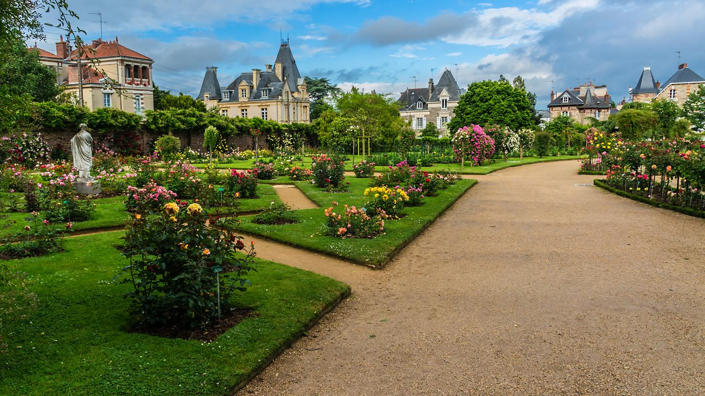

Lieux de contemplations et de découvertes, la roseraie et le jardin botanique invitent à la promenade.
Situés
tout à l’est du parc, ils n’en demeurent pas moins des lieux très fréquentés grâce à leurs couleurs, leur
ampleur et les milliers de variétés qu’ils ont à offrir.
Le Jardin botanique est organisé en onze plates-bandes circulaires où poussent plus de 3000 espèces. Le
parcours
du jardin est simple : il faut partir de l’extérieur du cercle, en commençant par les espèces de
champignons, de
mousses et de fougères et remonter au fur et à mesure vers le centre du cercle où se trouvent les plantes
les
plus imposantes. Le Jardin botanique est un véritable dictionnaire vivant, on y retrouve devant chaque
plante
une petite pancarte de couleur expliquant ses propriétés principales et sa classification
scientifique.
Non loin de là se trouve la Roseraie, lieu unique, riche en couleurs et en variétés de rosiers tige,
demi-tige,
grimpant ou buisson. Vous retrouverez sur le mur nord séparant le jardin de la rue de la Palestine une
grande
partie des rosiers grimpants.
Le Carré des nouveautés est un espace dans la roseraie dédiée aux rosiers créé durant ces dix dernières
années.
Ce Carré est à retrouver autour de la Statue de la Pensée, sculpture connue, que vous retrouverez également
au
Louvres et à Versailles. Vous retrouverez au sein de ce lieu la fameuse “rose de Rennes”, variété qui a été
créée par Michel Adam et qui a été lauréate du prix de la Rose en 1995.
Depuis 1990, il existe également un Carré des roses anciennes, localisé au sud du jardin botanique. Il
permet de
découvrir les plus anciennes variétés de “rosiers thé” et leur dérivé. Des pas japonais vous permettront
d’accéder à la statue Jeune savoyard pleurant sa marmotte réalisée par Julien Gourdel en 1835, ce passage
vous
mènera également au cœur de la roseraie ancienne. Pour les amoureux de dahlias, vous trouverez votre bonheur
à
l’exposition au nord-est du jardin botanique.
